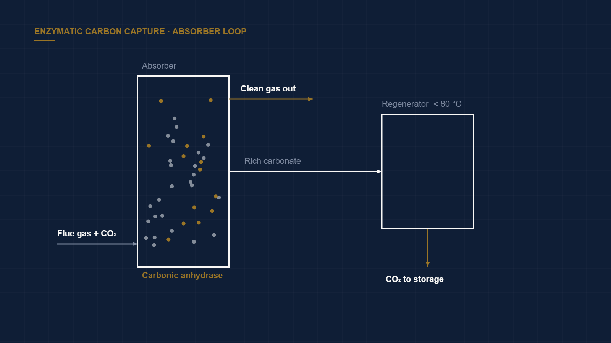

Enzymatic Carbon Capture: When Biology Beats Amines
← Back to Intelligence Hub
Post-combustion carbon capture has run on amine scrubbing for decades, and the technology's Achilles heel is thermodynamic, not mechanical: regenerating the solvent to release captured CO₂ consumes an enormous amount of low-grade heat, typically 3.5–4.0 GJ per tonne of CO₂ for conventional monoethanolamine (MEA). That energy penalty is the single biggest reason capture has not scaled. Enzymatic capture proposes to attack it directly.
The biological mechanism
Carbonic anhydrase (CA) is among the fastest enzymes known — a single molecule can hydrate on the order of a million CO₂ molecules per second, catalyzing CO₂ + H₂O ⇌ HCO₃⁻ + H⁺. In a capture context, CA is used to accelerate CO₂ absorption into a benign carbonate/bicarbonate solution (typically potassium carbonate) that would otherwise react far too slowly to be practical. Companies such as CO2 Solutions (later acquired by Saipem) built pilot systems around exactly this chemistry.
The prize is the working fluid. Because a carbonate solution binds CO₂ weakly compared to an amine, it regenerates at much lower temperatures — often below 80 °C rather than the ~120 °C amine strip. That lets the process run on waste heat and slashes the regeneration penalty, with credible modeled reductions of roughly 30–40% versus MEA.
The three questions diligence must force
- Enzyme longevity and cost. This is the whole thesis. Biological catalysts denature under heat, pH swings, and flue-gas contaminants (SOₓ, NOₓ, particulates). Turnover number over time, deactivation rate, and the recurring cost of enzyme replacement or immobilization are the line items that decide the economics — and the ones most often buried. Immobilizing CA on a support improves stability but adds cost and can throttle mass transfer. Ask for thousands of hours of stability data under real flue gas, not synthetic bench mixtures.
- Mass transfer at column scale. Bench reactors flatter kinetics because diffusion paths are short. In a full absorber column with real gas throughput, the rate advantage can compress. The relevant metric is CO₂ flux per unit of column volume at commercial gas velocities — not a beaker rate constant.
- CapEx parity. Lower operating energy is worthless if the contactor and enzyme-handling hardware cost more than the amine plant they replace. The comparison must be total cost of capture per tonne, including enzyme make-up, not just the energy line.
Where it fits
Enzymatic capture is most compelling where a source of low-grade waste heat already exists and where flue gas is relatively clean — cement kilns and certain industrial exhausts more than dirty coal. In those niches, the low-temperature regeneration turns an otherwise stranded heat stream into the process's energy supply.
Verdict
Genuinely promising, but gate the investment on demonstrated enzyme stability under contaminated, real-world flue gas for a commercially meaningful lifetime, plus a total-cost-per-tonne model that includes enzyme make-up. Until that data exists, treat the 40% figure as a laboratory ceiling, not a commercial floor — and be deeply skeptical of any memo that quotes the energy saving without the enzyme-replacement cost beside it.